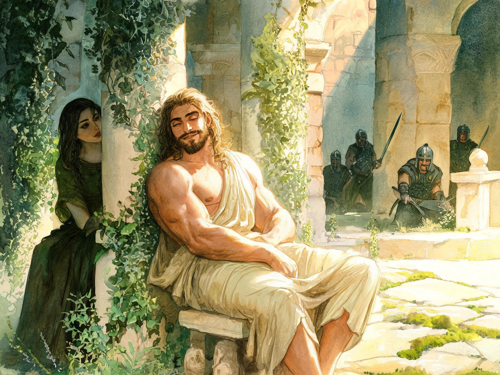
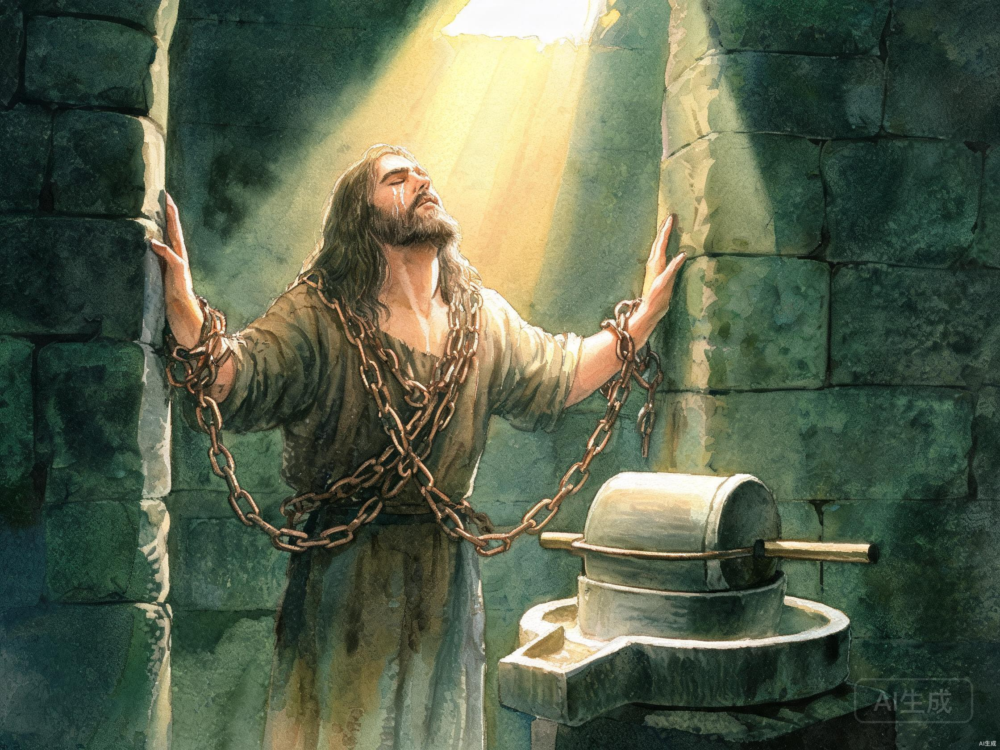

提到参孙，我相信不少人的第一反应就是：都是大利拉害了他。
他们会说，如果没有大利拉，参孙就不会失去力量；如果没有大利拉，他就不会被非利士人抓住；如果没有大利拉，他最后也不会落到那样悲惨的地步。
可问题是：如果没有大利拉，参孙真的就不会跌倒吗？
恐怕不是。
因为参孙的问题，并不是从大利拉开始的。大利拉只是把他里面早已存在的问题，彻底暴露了出来。
参孙从出生以前，就被分别出来。他得着了特别的恩赐，也承担着特别的使命。
可他的生命有一个长期没有认真对付的问题，就是他太习惯按自己的眼目和喜好作选择。
注意，他问的不是：「这是不是生命的主人所喜悦的？」
他在意的是：「我喜欢不喜欢，我看着合不合适。」
这几乎成了参孙一生很深的模式：眼目走在顺服前面，感觉压过了敬畏，喜好代替了真理。
后来，他又去了迦萨，看见一个妓女，就进去亲近她。再后来，才遇见大利拉。
所以，大利拉并不是参孙生命中的第一次危险，她只是前面一次次放纵不断累积之后，出现的最后一个网罗。

罪很少是突然把一个人拖垮的。
更多时候，它有一个缓慢的、几乎不易察觉的过程：
参孙就是这样。
他一次次越过界限，却没有立刻失去力量。于是，他便越来越相信，不是生命的主人托住他，而是他自己本来就有能力。
这正是恩赐很容易带给人的危险。
当一个人长期被使用，却没有认真对付里面的罪，他就可能——
可能力仍然存在，不等于生命的主人认可人的道路。
没有立刻受管教，也不等于罪没有后果。
神的忍耐不是给人继续犯罪的理由，而是给人悔改的机会。
可太多人把忍耐当成了默许，把延迟的审判当成了没有审判。
到了大利拉那里，这个问题已经发展得非常严重。
大利拉一再追问他力量的秘密。参孙几次欺骗她，可每一次他说完，大利拉就立刻照着他的话试验。
正常人早就应该看明白了：这个女人不是在爱他，而是在寻找怎样毁掉他。
可参孙还是留在那里。
为什么？
不是因为他完全看不出危险，而是因为他太相信自己能够驾驭危险。
最终，他把心里的秘密全都告诉了大利拉。
书中随后记下了一句非常沉重的话：
他却不知道，生命的主人已经离开他了。
—— 士师记 16:20

最可怕的，不只是生命的主人离开，而是参孙自己不知道。
他醒来以后，还说要像前几次一样出去活动身体。
他的动作没有变，他的自信没有变，他对自己的判断也没有变。可是，真正托住他的力量已经不在了。
家人们，一个人危险的时候，不只是明显跌倒的时候。
更危险的是，里面已经远离生命的主人，外面却还以为自己和从前一样。
还会说熟悉的话，还能做熟悉的事，甚至还保留着过去服侍的样子；可里面对罪的敏感已经迟钝，对生命的主人的敬畏已经减弱，对恩典的倚靠也被自信取代了。
参孙后来被剜去双眼，被铜链捆住，在监里推磨。
这不是偶然。
罪的后果，从来不是随机的。它常常精准地击中我们最骄傲、最放纵的那个地方。
这不是说每一个罪都会带来一模一样的现世报应。而是说，种什么，就收什么——这是生命的法则，也是神公义的体现。
但参孙的故事并没有停在这里。
书中说，他头上的头发渐渐长了起来。
这句话很短，却留下了一线盼望。
头发本身不是力量的来源，生命的主人才是。头发重新长起来，像是在提醒：参孙的故事还没有完全结束。
你会发现，这时的参孙变了。
从前，他依靠自己的力量；如今，他承认力量必须从生命的主人而来。
从前，他把恩赐当作自己随时可以使用的东西；如今，他只能祈求怜悯。
他一生中有很多混乱，也为自己的放纵付出了极重的代价。但在最后，他重新转向了生命的主人。
生命的主人也垂听了他的呼求。
这不是说，他过去的后果都被抹去了。
他失去的眼睛没有回来，曾经造成的伤害也不能当作没有发生。
恩典不是让人轻看罪的代价。
恩典是在人已经走到破碎之处时，仍然为悔改的人留下归回的路。
所以，参孙出问题，不能全怨大利拉。
真正毁掉他的，不是最后出现的那个女人，而是他里面长期没有对付的情欲、任性和自恃。
大利拉只是最后拉动了那张网。
而那张网，其实是参孙自己一次次走进去的。
参孙的结局也提醒我们：
跌倒很深，不等于生命的主人没有归回的路；付出惨重代价，也不等于只能永远躺在失败里。
真正需要警醒的是，不要把责任全推给外面的诱惑；
真正需要盼望的是，只要人仍肯回转、呼求，生命的主人仍有怜悯。
参孙最大的敌人，不是大利拉。
而是那个一直觉得自己可以靠近罪、掌控罪，却不会被罪辖制的自己。
参孙最后能够再次站起来，也不是因为他又恢复了从前的自信。
而是因为他终于承认：离开生命的主人，他什么也不能。